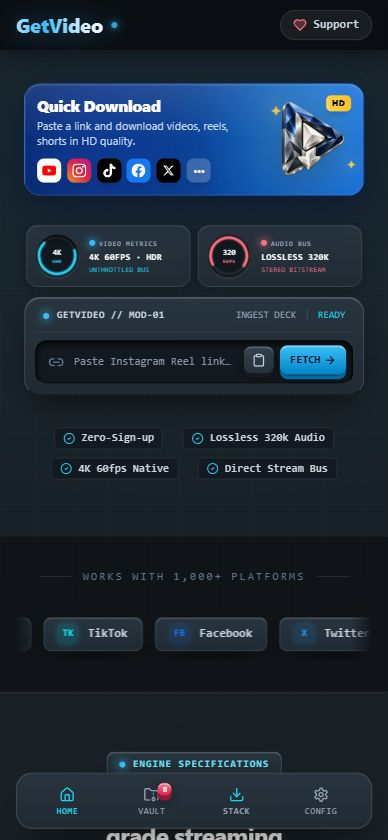
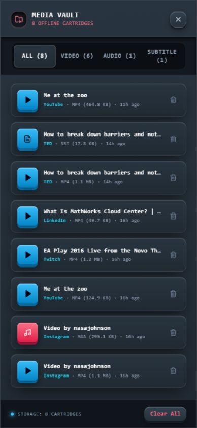

Video. Audio.
Your choice.
Paste a public link and choose from the available video qualities or audio options. Keep the format that fits your day.
AN ANDROID APP BY RA STUDIOS
The videos you come back to. The audio you love. Save them with GetVideo, and make room for a little more offline.

A link is all it takes.
LESS FRICTION. MORE FREEDOM.
One thoughtful place to download, refine, and keep your media. No account to create. No subscription to manage.
Paste a public link and choose from the available video qualities or audio options. Keep the format that fits your day.
Trim a clip with start and end times. Add available subtitles in your language, with a separate subtitle file when needed.
Your Vault brings saved media together. Play supported files, seek through them, and share the actual downloaded file.
Background downloads and progress notifications help you stay on track. Future update prompts keep the app within reach.
Available formats and subtitles depend on the original upload. Private, removed, protected, or restricted links may be unavailable.
A CLOSER LOOK
Real screenshots of the GetVideo interface. A clear starting point. An organized collection. Your media, without the clutter.
Paste a link. Choose what to keep.

Find it. Play it. Share the file.
A FEW TAPS FROM OFFLINE
GetVideo is available as an Android APK. Download it from our official GitHub release and install it on your phone.
Get the latest APKChoose the APK in the latest release. You’ll need Android 7.0 or newer.
Open the APK and allow installation from your browser or file manager if Android asks. Install over an existing copy to keep your Vault and settings.
Copy a public media link, paste it into GetVideo, and select the quality or audio option you want.
Yes. GetVideo does not require an account or subscription. Your network provider may still charge for mobile data.
Many public video and audio websites, including YouTube, Instagram, TikTok, Facebook, X, Vimeo and others. Availability depends on the specific link and the source platform.
Yes. Choose an available audio option or a subtitle language. Captions can be included in compatible videos, with a separate SRT file as a fallback. Only captions available from the source are offered.
On Android, completed files save to Downloads / GetVideo. The Vault helps you find and play supported files, or share them with another app.
Version 1.0.3 and newer can notify you when a newer public APK release is available. You can also use Check for updates in Settings. Android asks you to approve installation.
Use GetVideo for content you own, have permission to download, or are otherwise allowed to save. Respect creators, copyright and the source website’s terms. Some protected or restricted content cannot be downloaded.
INDEPENDENT WORK. SHARED FREELY.
RA Studios builds free applications with care. If GetVideo makes your day a little easier, you can help us keep building.